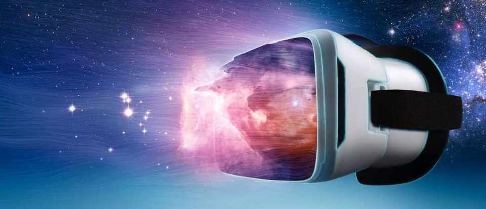

Augmented Reality with JavaScript
What is AR?
Augmented reality (AR) is an interactive experience of a real-world environment where the objects that reside in the real world are enhanced by computer-generated perceptual information, sometimes across multiple sensory modalities, including visual, auditory, haptic, somatosensory and olfactory.
-
AR can be defined as a system that fulfills three basic features:
- a combination of real and virtual worlds
- real-time interaction
- and accurate 3D registration of virtual and real objects
AR vs VR

What is VR?
Virtual reality (VR) is a simulated experience that can be similar to or completely different from the real world. Applications of virtual reality can include entertainment (i.e. video games) and educational purposes (i.e. medical or military training).
Currently standard virtual reality systems use either virtual reality headsets or multi-projected environments to generate realistic images, sounds and other sensations that simulate a user's physical presence in a virtual environment.
Using of VR
Virtual reality is most commonly used in entertainment applications such as video games and 3D cinema. Consumer virtual reality headsets were first released by video game companies in the early-mid 1990s. Beginning in the 2010s, next-generation commercial tethered headsets were released by Oculus (Rift), HTC (Vive) and Sony (PlayStation VR), setting off a new wave of application development. 3D cinema has been used for sporting events, pornography, fine art, music videos and short films. Since 2015, roller coasters and theme parks have incorporated virtual reality to match visual effects with haptic feedback.
The Augmented/Mixed/Virtual Reality (AR/MR/VR) combo has enjoyed frenetic growth since 2016, coming from a marginal market value of bit more than $6 Billion to one that might reach the $210 Billion in sales (including hardware) by 2022. Of all, Augmented Reality is the one experiencing steady growth.
VR can simulate real workspaces for workplace occupational safety and health purposes, educational purposes, and training purposes. It can be used to provide learners with a virtual environment where they can develop their skills without the real-world consequences of failing. It has been used and studied in primary education, anatomy teaching, military, astronaut training, flight simulators, miner training, architectural design, driver training and bridge inspection.
Becoming JavaScript-Augmented
Before starting, I would suggest to have a look at the several AR platforms and standards. The same technical constraints affecting the industry are also reflected in the AR world. For example, there are several platforms, one for each Big Tech (Google = ARCode, Apple = ARKit, MS = ChakraCore, Facebook = AR Studio, React 360, Mozilla = aframe). After having a quick look at the options, starting fully JavaScript’ed Augmented Reality projects is relatively easy. You can begin by taking any web/app dev framework like Cordova, Ionic, React Native or Vue Native to embed the AR framework of your choice — and deploy 3D assets on top of the real world.
If what you want is to deploy on the web using mostly marker-based AR, you could use GitHub repos like AR.js (free), argon.js (free but limited) or awe.js (paid PaaS but with an old GitHub repository still available). There are a few tailored ones that are harder for the novice, many of them focused on things like facial/head recognition (such as tracking.js and headtrackr).
AR js
AR.js is a lightweight library for Augmented Reality on the Web, coming with features like Image Tracking, Location based AR and Marker tracking.
To boil it down, it’s essentially a Javascript framework acting as a port of ARToolkit, while leveraging other packages like a-frame and three.js. The goal being augmented reality features directly on web browsers without sacrificing performance. As far as compatibility goes, it works on any browser capable of WebGL + WebRTC.